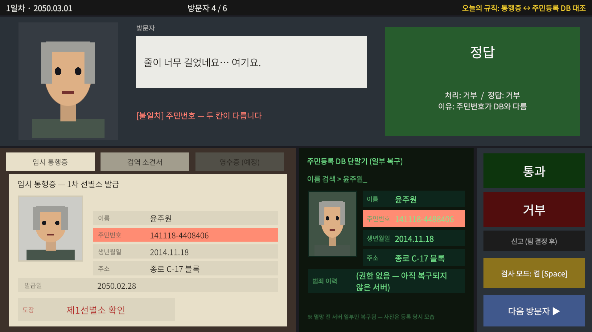
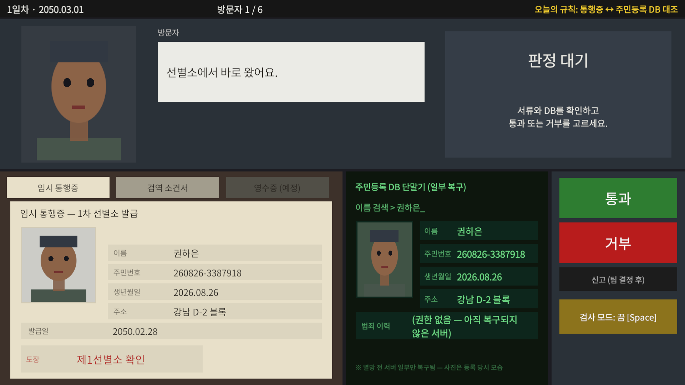
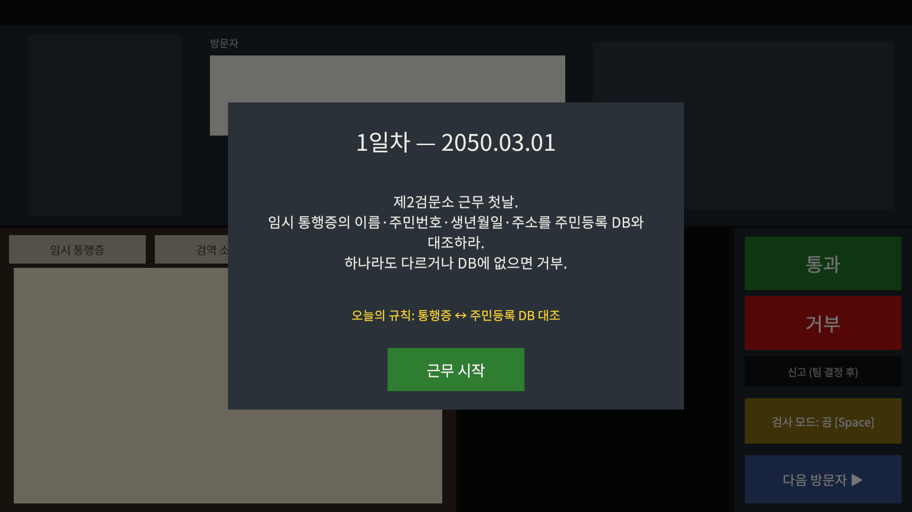
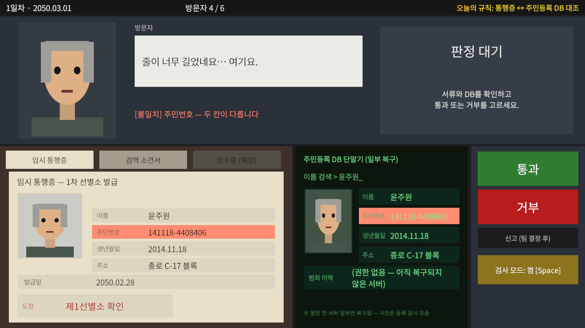
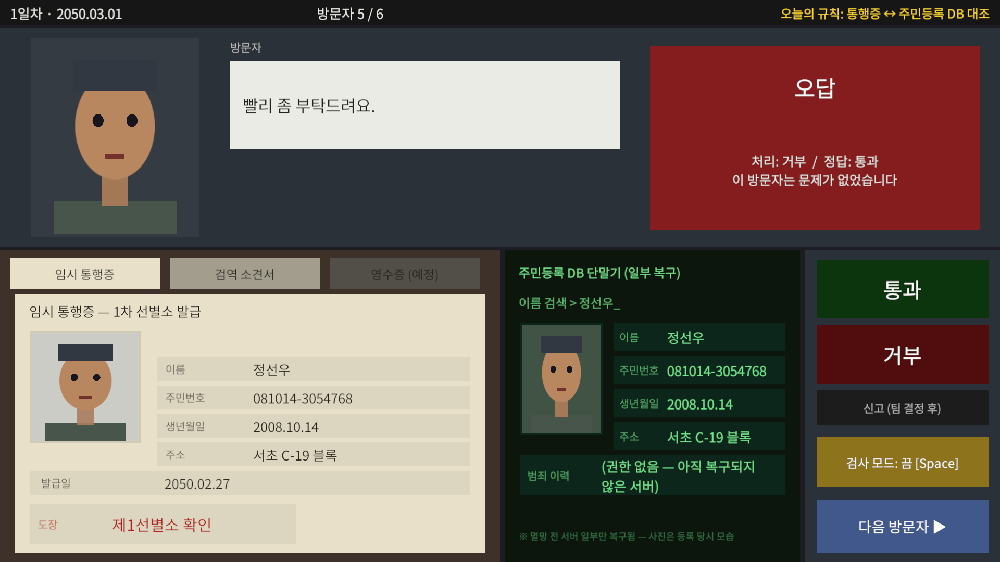
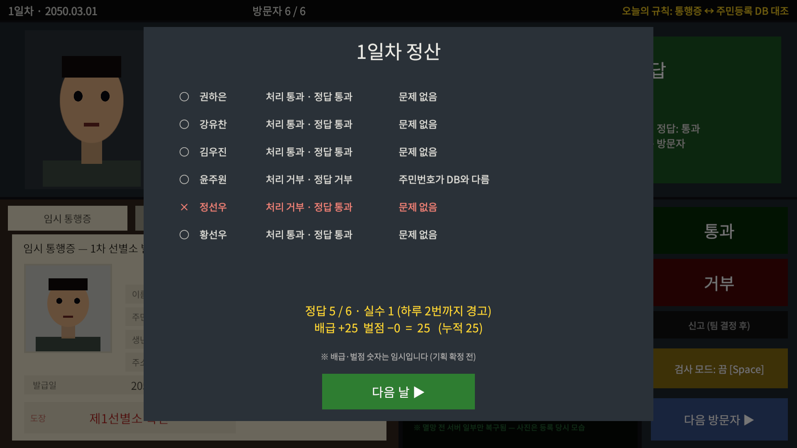
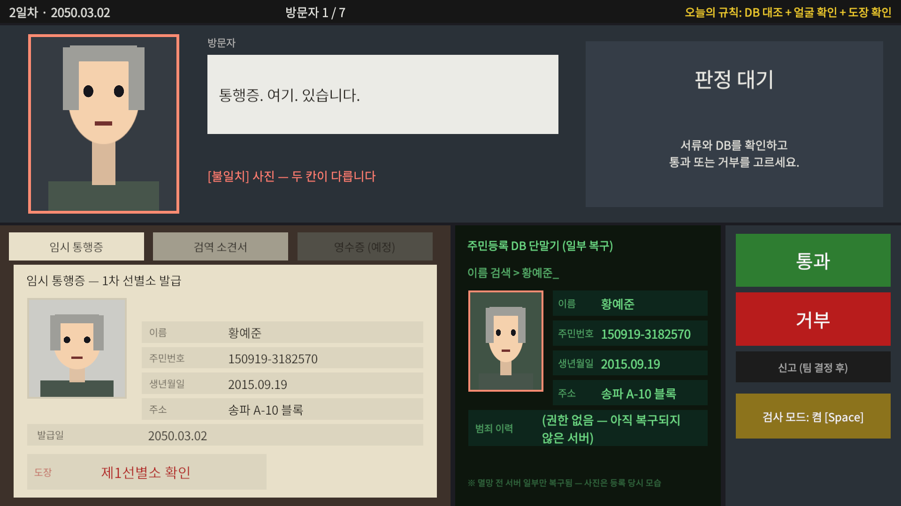
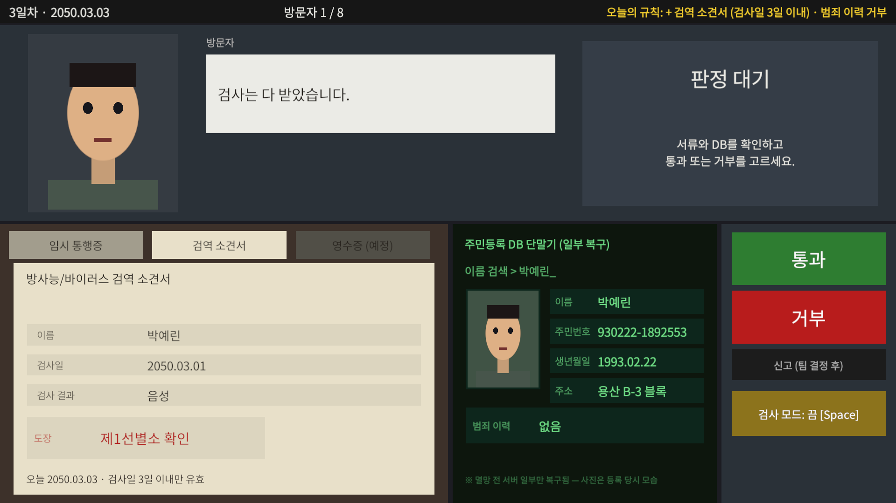

| 단계 | 메커니즘 | 되는 것 | 상태 |
|---|---|---|---|
| P0 | 데이터 · 정답 계산 | 주민 60명 DB, 방문자 자동 생성 | 완료 |
| P1 | 검문 루프 | 방문자 → 서류 → 판정 → 결과 | 완료 |
| P2 | 서류–DB 대조 | 두 칸을 골라 일치 여부 확인 | 완료 |
| P3 | 외부인 판별 | 얼굴과 DB 사진 비교, 검역 소견서 | 완료 |
| P4 | 하루 정산 · 규칙 추가 | 하루 끝 정산, 1~3일차 규칙 증가 | 완료 |
| 날짜 | 방문자 | 확인할 것 |
|---|---|---|
| 1일차 | 6명 | 통행증과 DB 대조 (이름 · 주민번호 · 생년월일 · 주소) |
| 2일차 | 7명 | + 얼굴이 다른 외부인, 위조 도장 |
| 3일차 | 8명 | + 검역 소견서 (3일 이내), 범죄 이력 |
국경 검문소 서류 심사 게임. 검문 루프의 뼈대를 가져왔습니다.
| 가져온 시스템 | 원작 | 우리 프로토타입 |
|---|---|---|
| 검문 루프 | 입국자 → 서류 → 허가·거부 | 방문자 → 통행증 → 통과·거부 |
| 기준 자료 대조 | 서류를 규정집과 비교 | 통행증을 주민등록 DB와 비교 |
| 검사 모드 | 두 항목을 눌러 불일치 확인 | Space → 두 칸 클릭 → 결과 표시 |
| 날짜별 규칙 | 날마다 규칙 추가 | 1~3일차 규칙 추가 |
| 방문자 생성 | 진짜 자료 복사 + 오류 1개 | DB 주민 복사 + 오류 1개 |
| 위조 서류 | 도장이 미묘하게 다름 | 「제1선별쇼」 같은 오타 도장 |
| 경고 뒤 벌금 | 2번 경고, 3번째부터 벌금 | 2번 경고, 3번째부터 배급 차감 |
| 하루 정산 | 번 돈 · 지출 화면 | 정답 수 · 배급 · 벌점 화면 |
변장한 도플갱어를 가려내는 게임. 외부인 판별을 가져왔습니다.
| 가져온 시스템 | 원작 | 우리 프로토타입 |
|---|---|---|
| 얼굴만 다름 | 외형이 미묘하게 다름 | 서류는 진짜, 얼굴만 다름 |
| 믿을 자료 하나 | 100% 정확한 주민 파일 | 주민등록 DB 사진 · 기록 |
| 어색한 말투 | 부자연스러운 대사 | "통행증. 여기. 있습니다." |
| 세계관 | 2050년 서울 생존 구역, 1차 선별소 |
| DB 설정 | 멸망 전 서버가 일부만 복구된 주민등록 DB |
| 서류 | 임시 통행증, 검역 소견서, 물자 기부 영수증 (영수증은 추후) |
| 참고 게임 | 배운 점 | 우리 프로토타입 |
|---|---|---|
| Papers, Please | 부스와 책상으로 화면 분할 | 위 부스, 아래 책상 |
| That's Not My Neighbor | 서류 끌기는 책상을 어지럽힘 | 끌기 대신 탭으로 전환 |
| Headliner: NoviNews | 승인·거부를 색으로 구분 | 통과 초록, 거부 빨강 |
| Beholder · Death and Taxes | 클릭이 많으면 지루함 | 문제없으면 2번 클릭 |
| Her Story | 낡은 DB를 설정으로 활용 | 1~2일차 범죄 이력 잠김 |
| Quarantine Zone | 감염 검사 서류 | 검역 소견서 (3일 이내) |

1 2 3 4 5 6 7| 1 | 위쪽 바 · 날짜, 순번, 오늘 규칙 | 5 | 서류 책상 · 탭으로 서류 전환 |
| 2 | 방문자 얼굴 · 외부인 판별용 | 6 | DB 단말기 · 이름으로 자동 검색 |
| 3 | 말풍선 · 대사, 검사 결과 | 7 | 판정 버튼 · 통과, 거부, 검사 모드 |
| 4 | 결과 칸 · 정답·오답과 이유 |


| [근무 시작] | 하루 시작 | [통과] / [거부] | 판정 |
| 서류 탭 | 서류 바꾸기 | [다음 방문자 ▶] | 다음 사람 부르기 |
| Space / [검사 모드] | 검사 모드 켜고 끄기 | [다음 날 ▶] | 다음 날로 이동 |




| 1. 받기 | GitHub School-TeamProject 받기 |
| 2. 열기 | Unity Hub → Add → ProtocolSeoul 폴더 (Unity 6000.5.9f1) |
| 3. 실행 | Scenes/Checkpoint.unity 열고 ▶ Play |
| 장면이 없으면 | 메뉴 Protocol Seoul > Setup Project |
| 화면 크기 | 어떤 창에서도 16:9로 맞춰집니다. |
위치: Assets/_Project/Resources/Days/Day1~3 · Inspector에서 수정합니다.
| 항목 | 내용 |
|---|---|
| Visitor Count | 하루 방문자 수 |
| Error Rate | 오류 있는 방문자 비율 (0.4 = 40%) |
| Rules | 그날 확인할 규칙 목록 |
| Briefing | 하루 시작 때 지시문 |
| Rule Short | 위쪽 바의 규칙 한 줄 |
| 항목 | 지금 | 정할 것 |
|---|---|---|
| 신고 버튼 | 꺼져 있음 | 버튼 2개로 갈지, 3개로 갈지 |
| 기부 영수증 | 탭만 있음 | 무엇을 확인하는 서류인지 |
| 배급 · 벌점 | +5 / −5 (임시) | 실제 숫자 |
| 시간 제한 | 없음 | 넣을지, 하루 몇 분인지 |
| 정답 공개 | 판정 직후 | 정산 때만 보여 줄지 |
| 그림 | 도형 임시 그림 | 디자인 시안 |
| 스토리 인물 | 없음 | 메인 NPC와 대사 |